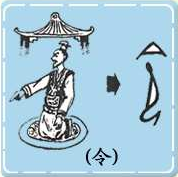
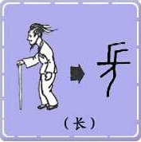

| 许慎在《说文解字·序》给假借所下的定义是：“本无其字，依声拖事,‘令’，‘长’是也。” |
| 意思是说口语中某个词，书面上尚未有代表它的字。就借用一个同音的字 ，通过声音去寄托它的意思。 |
| 令：上面是一个大屋顶的形象，下面是一个跪坐着的人，似乎正在屋内向别人发布命令。”令“字的含义：发布命令。 后来，被假借去用在于它声音相同的语词上，如作为官名之称的县令、太史令；”令“后又用作”使“讲，如：令人发指；又作为敬辞之用，如：令尊、令堂、令郎、令爱等之称。 长：像一个头上有着头发，手持拐杖的人。本义是长途长远。后缀借为对地位高于一般人的称呼。如： 县长、市长、家长、兄长（读音为zhǎng)。”长“用于时间相隔之久远，如：长期、细水长流（读音为 cháng）等。 |  |